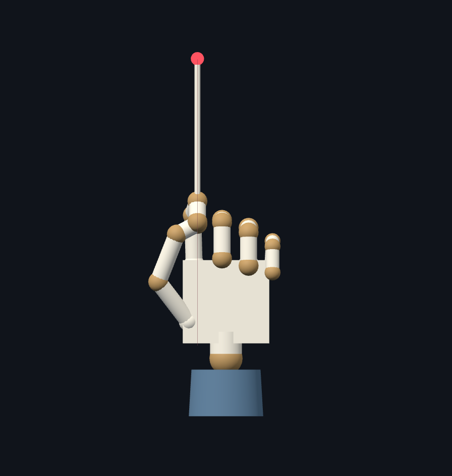
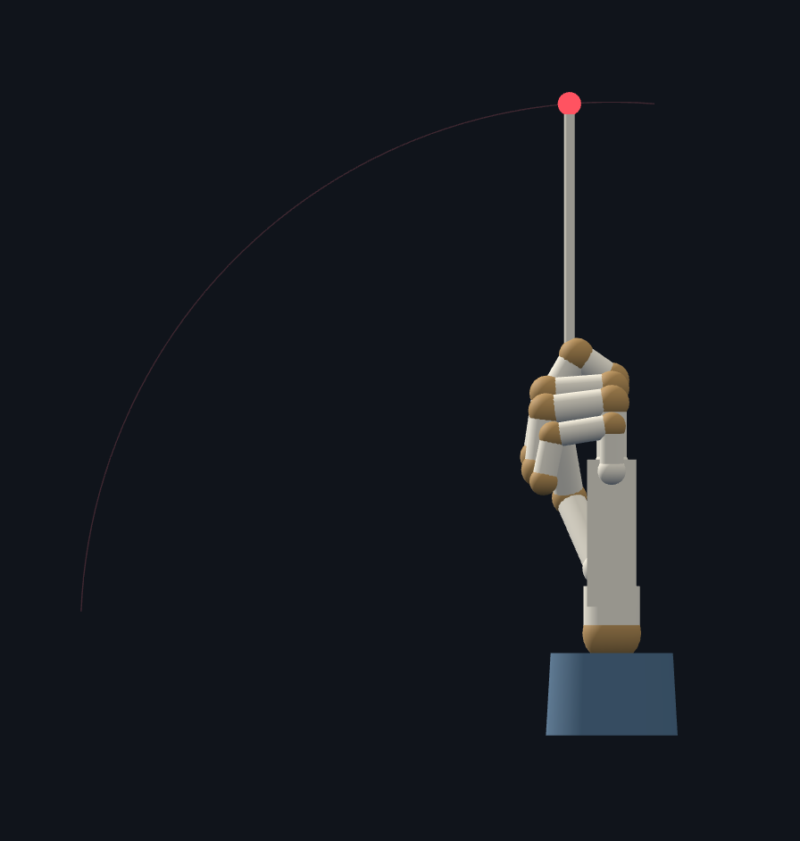
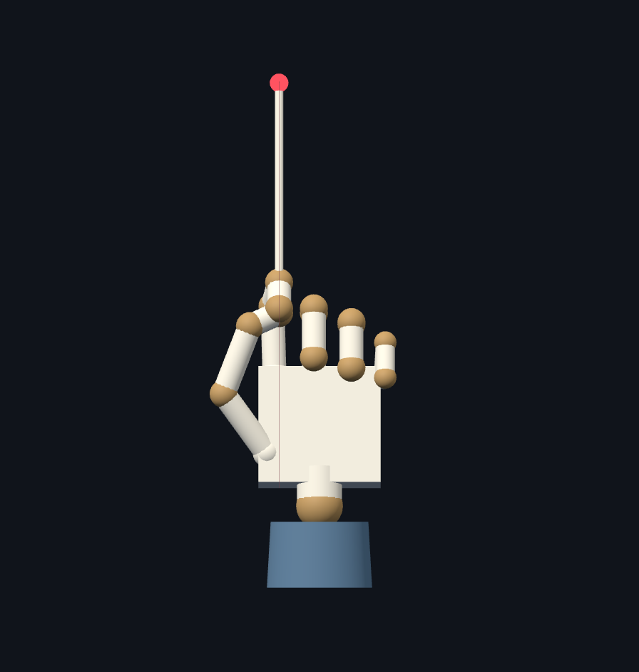
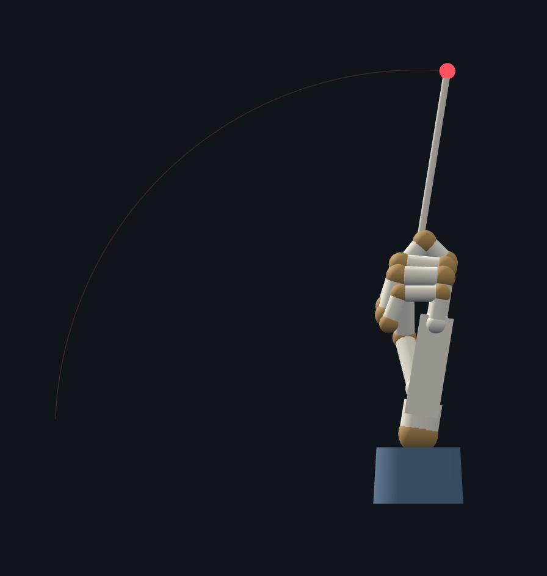
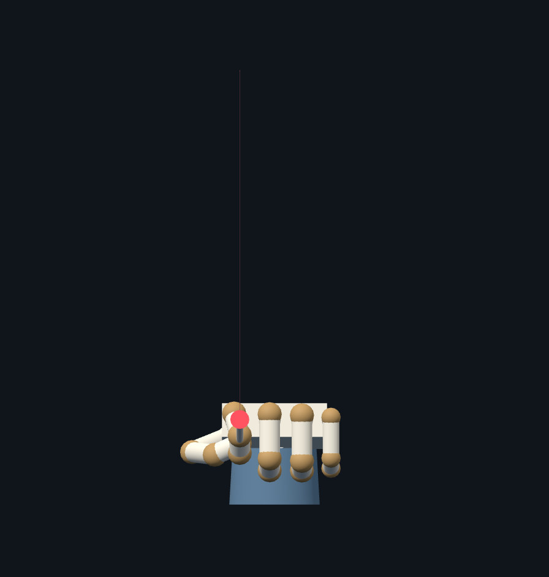
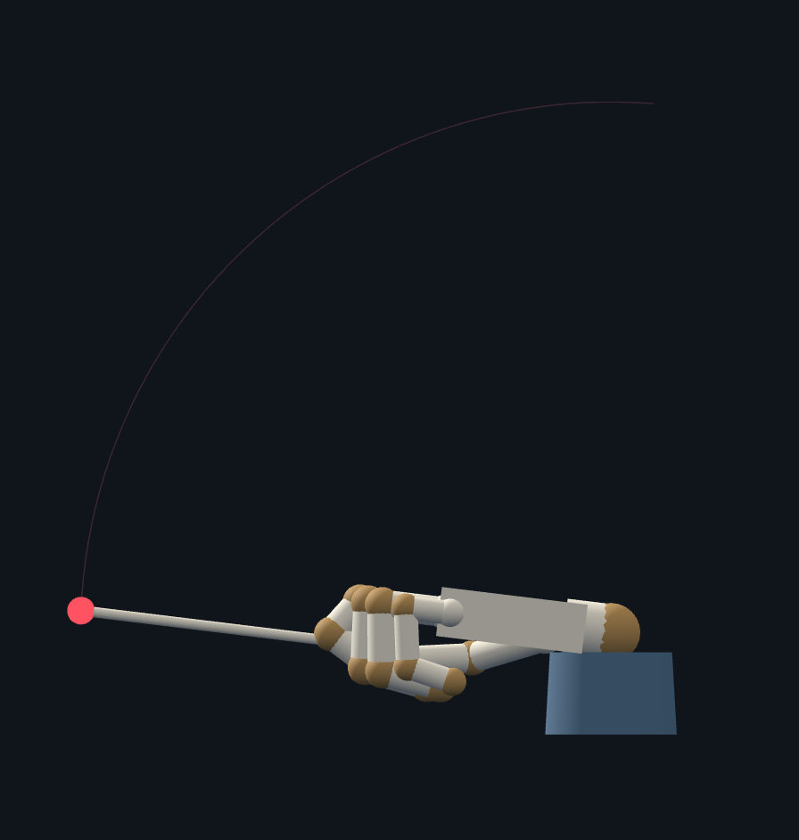
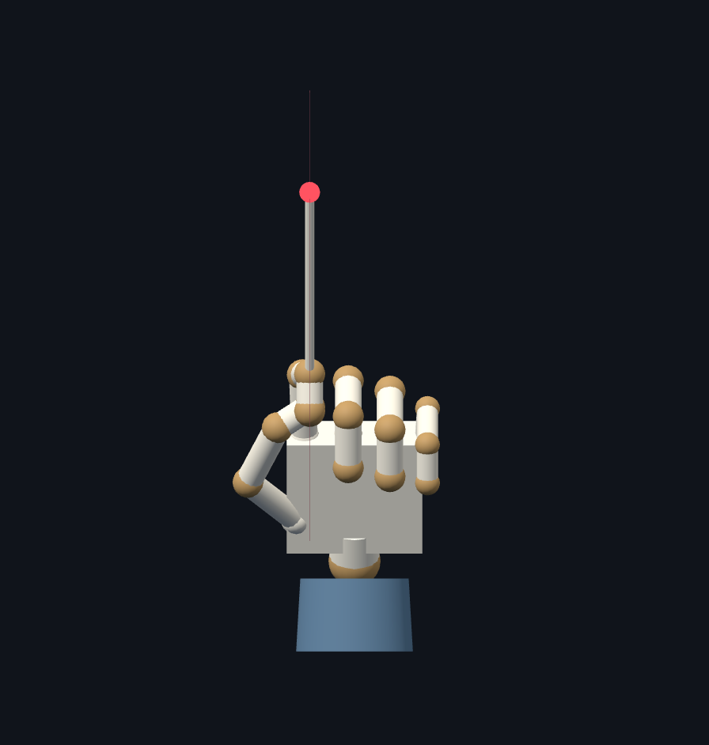
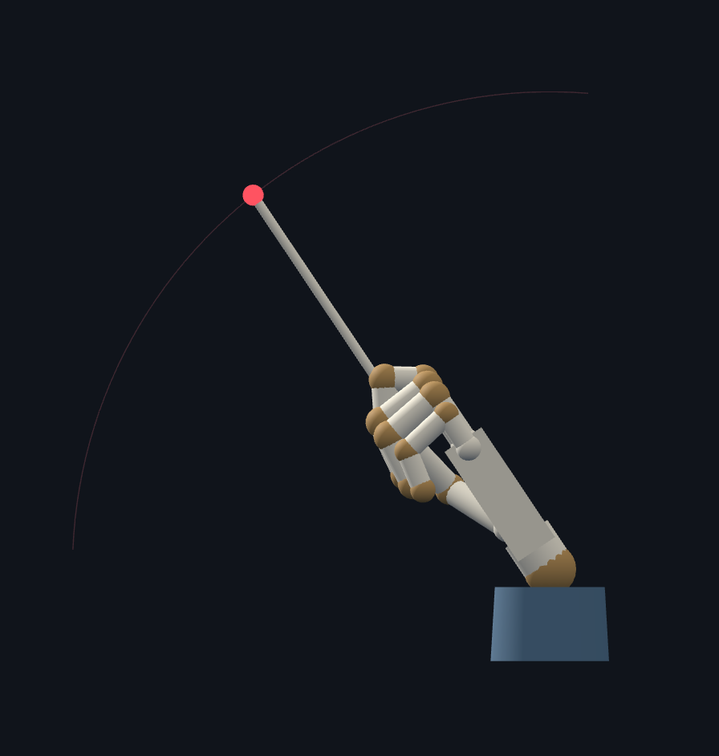

The Conductor · approved wrist motion
Key-pose reference pack. Motion approved; rough shapes are not character art.
Artist brief & timing · Live motion (local server required)
01 · Upright idle — 0 ms


02 · Small wrist extension — 130 ms


03 · Forward beat — 260 ms


04 · Softer recovery — 600 ms


Returns to the same upright idle at 1200 ms. No hold at the beat. These four keys do not replace the full motion reference.